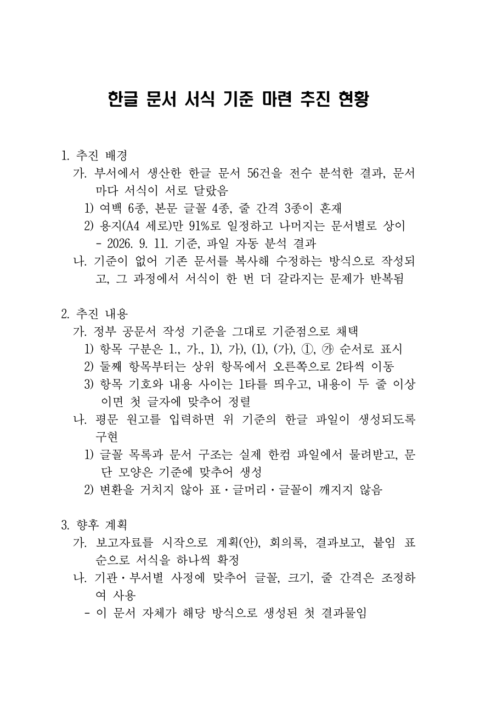

공유폴더의 한글 문서 56건을 자동으로 읽어 여백·글꼴·줄 간격을 세어 봤습니다. 용지(A4 세로 91%)만 일정하고 나머지는 문서마다 달랐습니다.
| 항목 | 종류 | 실측 분포 |
|---|---|---|
| 여백 | 6종류 | 상20·하15·좌20·우20 (39%) / 상15·하10 (19%) / 상10·하10 (12%) / 좌우 30 (8%) … |
| 본문 글꼴 | 4종류 | 휴먼명조 43% · 맑은고딕 20% · 함초롬바탕 12% · 한양중고딕 6% |
| 본문 크기 | 10pt 55% | 12pt 19% · 9pt 7% · 11pt 7% — 같은 종류 문서인데 크기가 다름 |
| 줄 간격 | 3종류 | 130% (35%) · 160% (29%) · 120% (14%) |
| 글머리 기호 | 6종류+ | - 37% · [ 10% · 【 6% · ○ 5% · ※ 4% · ◦ 2% |
왜 이럴까. 기준이 없으니 지난 문서를 복사해서 고쳐 쓰고, 그때마다 서식이 한 번 더 갈라집니다. 검토한 예시 파일 한 건은 그 안에서 줄 간격이 150%·160% 두 벌이었습니다. 문제는 '한글을 못 다뤄서'가 아니라 골격이 매번 달라서입니다.
※ 통계는 수치만 싣습니다. 개별 파일명·내용·작성자는 여기에 싣지 않습니다. 누구의 문서가 '잘못된 예'라는 뜻이 아닙니다 — 기준이 없으면 누구나 그렇게 됩니다.
어느 문서를 골라도 "그게 표준"이라는 근거가 없습니다. 그래서 바닥은 법령(「행정업무의 운영 및 혁신에 관한 규정 시행규칙」 제2조)과 행정안전부 『행정업무운영 편람』으로 깔고, 기관·부서 사정은 그 위에서 고쳐 씁니다. 출처를 댈 수 있고, 바뀌면 따라가면 됩니다.
※ 신청서·증명서 같은 「서식」은 기준이 따로 있습니다(시행규칙 [별표 4]: 여백 상·좌·우 20/하 10mm, 돋움 10pt). 이 페이지는 보고자료·기안문 쪽 이야기입니다.
이번 주 미션의 핵심 두 단어를 도구 안에 이렇게 배치했습니다.
2절의 A·B가 그대로 카드 한 장(SKILL.md)입니다. 한 번 적어 두면 누가 시켜도 같은 서식이 나옵니다. 요리로 치면 레시피 카드 — 사람이 바뀌어도 맛이 같습니다. 카드에 적힌 것은 코드가 아니라 "항목 기호는 이 순서로, 날짜는 마침표로" 같은 말입니다.
문서 종류마다 규칙이 조금씩 다르니 담당을 나눕니다. 큰 주방에서 국·구이·후식을 각자 맡는 것과 같습니다. 담당 파일에는 이 문서만의 다른 점(한 쪽인가, 첫 줄이 무엇인가, 기본값)만 적고, 공통 규칙은 카드를 가리킵니다. 지금은 보고자료 담당 하나가 완성됐고, 나머지는 같은 방식으로 붙입니다.
---
name: hwpx-report
description: 평문 원고(메모장 txt)를 정부 공문서 작성 기준 서식의 한글 파일(.hwpx)로 만든다.
"한글 파일로 만들어줘", "공문서 서식으로", "보고자료 hwpx" 요청 때 사용.
---
## 절차
1. 원고를 기준 형식으로 정리한다. (이 단계가 이 스킬의 판단 부분)
- 첫 줄 `제목: ...`
- 항목 기호를 법정 순서로: 1. → 가. → 1) → 가) → (1) → (가) → ① → ㉮
- ■ ● ▶ ※ ◆ 등 규칙에 없는 기호는 위 순서로 바꾼다. 부연 설명 줄은 - 로 둔다.
- 들여쓰기·탭은 전부 지운다(기호를 보고 자동으로 2타씩 넣는다).
- 날짜는 2026. 9. 15.(월) 형식. 항목이 하나뿐인 층에는 기호를 붙이지 않는다.
- 내용(문장)은 고치지 않는다. 오탈자가 보이면 고치지 말고 결과 안내 때 알려준다.
2. 생성기를 실행한다. python 도구/hwpx서식/build_hwpx.py 원고.txt 결과.hwpx [--한장]
3. 결과를 안내한다. 파일 위치 / 바꾼 것(기호·날짜) / 고치지 않은 것(문장·오탈자)을 3줄 이내로.
## 바꾸지 않는 것 (법령, A항) ## 바꿔도 되는 것 (B항) ## 하지 않는 것
… HTML·DOCX를 거쳐 한글로 변환하지 않는다(표·글머리·글꼴이 깨진다).
담당(서브에이전트) 파일은 열 줄 남짓입니다: "너는 보고자료 담당이다 → 스킬 절차대로 한다 → 이 담당만의 기본값(한 쪽, 제목 한 줄, 15pt) → 표·다른 종류·외부 전송은 하지 않는다." 작업 분할의 실익은 새 종류를 붙일 때 규칙을 다시 적지 않는다는 것입니다.
제목: 한글 문서 서식 기준 마련 추진 현황 1. 추진 배경 가. 부서에서 생산한 한글 문서 56건을 전수 분석한 결과, 문서마다 서식이 서로 달랐음 1) 여백 6종, 본문 글꼴 4종, 줄 간격 3종이 혼재 2) 용지(A4 세로)만 91%로 일정하고 나머지는 문서별로 상이 - 2026. 9. 11. 기준, 파일 자동 분석 결과 나. 기준이 없어 기존 문서를 복사해 수정하는 방식으로 작성되고 … 2. 추진 내용 가. 정부 공문서 작성 기준을 그대로 기준점으로 채택 1) 항목 구분은 1., 가., 1), 가), (1), (가), ①, ㉮ 순서로 표시 2) 둘째 항목부터는 상위 항목에서 오른쪽으로 2타씩 이동 3) 항목 기호와 내용 사이는 1타를 띄우고 … 나. 평문 원고를 입력하면 위 기준의 한글 파일이 생성되도록 구현 … 3. 향후 계획 가. 보고자료를 시작으로 계획(안), 회의록, 결과보고, 붙임 표 순으로 서식을 하나씩 확정 나. 기관·부서별 사정에 맞추어 글꼴, 크기, 줄 간격은 조정하여 사용 - 이 문서 자체가 해당 방식으로 생성된 첫 결과물임

1. 가. 1) -처럼 앞에 붙이기만 하면 됩니다.--한장)보고자료가 한두 줄 넘칠 때 실무에서 하는 순서 그대로 조입니다. 글을 자르는 건 마지막입니다.
생성기(파이썬)는 Claude Code가 작성했고, 저는 기준을 정하고 결과를 한글로 열어 검증하는 쪽을 맡았습니다. 시안 1~3은 들여쓰기 폭·매달린 줄 처리에서 틀려 시안 4에서 통과했습니다.
| 구분 | 내용 |
|---|---|
| 된 것 | 보고자료(한 쪽) 서식 1종 — 기준 문서·골격·생성기·Skill 카드·보고자료 담당 서브에이전트. 한 장 맞추기 자동화(한글 실제 조판 검증). 기준의 출처는 전부 원문 확인(법령·편람). |
| 아직 안 된 것 | 계획(안)·회의록·결과보고·붙임 표·기안문 담당 — 순서대로 추가 예정. 표·그림이 들어가는 문서(지금은 글 위주 문서만). '우리 부서 기본값'(B항) 확정. |
| 바꾸지 않을 원칙 | 글자는 한 자도 바꾸지 않음 — 모양만 정리. 내부 문서가 밖으로 나가지 않음(PC 안에서 처리, 외부 AI에 문서 내용을 보내지 않음). 특정 사람의 문서를 표준으로 삼지 않음. |
| 구분 | Before | After |
|---|---|---|
| 서식 기준 | 지난 문서를 복사해 고침 → 문서마다 갈라짐 | 법령·편람 기준 한 장(Skill)으로 고정, 부서 값은 설정 한 곳 |
| 작성 | 내용 쓰고 나서 들여쓰기·기호·글꼴을 손으로 맞춤 | 내용만 평문으로, 서식은 자동 |
| 한 장 맞추기 | 자간·장평을 눈대중으로 조이거나 문장을 잘라냄 | 정해진 순서·한도 안에서 자동, 안 되면 "원고를 줄여야 합니다" |
| 새 문서 종류 | 처음부터 다시 서식 잡음 | 담당 파일 열 줄 추가 (규칙은 카드 공유) |
Skill 카드의 B항(글꼴·크기·여백·첫 줄 구조)은 코드가 아니라 "우리 문서는 이렇다"는 말이면 채울 수 있습니다. 4회차 스터디(9. 14.)에서 "내가 자주 쓰는 문서 1종의 바꾸지 않을 것 / 바꿔도 되는 것 3줄"을 적어 보내 주시길 요청했고, 회신이 오는 대로 기준 문서의 "부서 의견" 절과 담당 파일 기본값에 반영합니다. (이 페이지 작성 시점에는 회신 취합 전입니다.)
다음 계획: ① 계획(안) 담당 → 회의록 담당 순으로 추가(각각 담당 파일 + 골격 검증) ② 생성기에 표(붙임 표) 기능 ③ 3주차 취합봇의 승인본을 이 생성기로 hwpx 병합본까지 만들기 — 3주차의 "다음 계획 ①"이 이번 주 도구로 이어집니다.